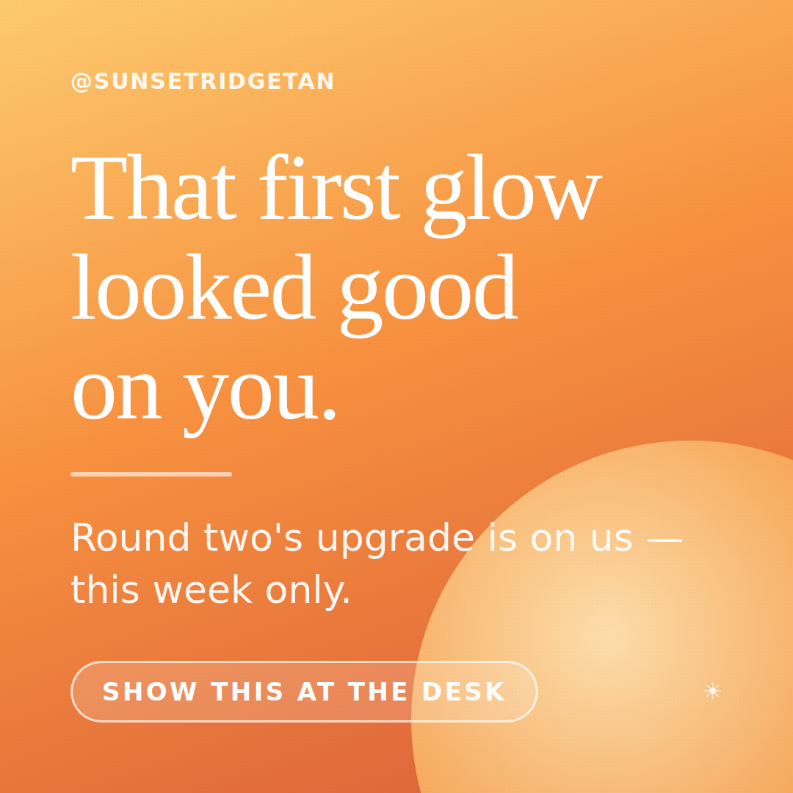
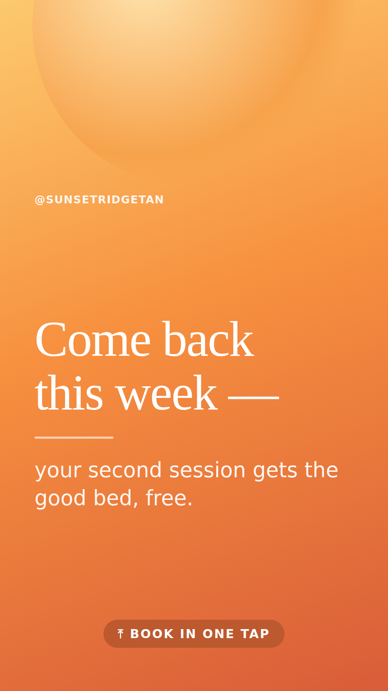

Campaign 1 · always-on automation
Glow-Back — the day-5 message
Why: three of four returning first-timers are back within 7 days; after a week, odds fall to 3-in-10. ~320 undecided first-timers per salon-year; a rescued one spends ≈ $113 in year one. The follow-up must land on day 5, not month-end.
Creative — rendered


SMS / DM script (day 5, from the salon's own number)
"Hey [name] — it's [staffer] from Sunset Ridge ☀️ That first glow suited you. Come back any day this week and I'll bump you to the good bed, no charge. Want me to hold tomorrow at [their first-visit hour]?" — send at the hour of their first visit; it's the hour they already chose once.
Targeting
- Primary: till-printed day-5 list (name + number). This is the campaign.
- Support: IG/FB custom audience "new clients last 14 days" — story + static as air cover, $2–3/day.
- Sep–Nov: double the support budget — autumn first-timers vanish 12 points more and are worth the same.
Caption (static)
That first glow looked good on you. Round two gets the good bed — on us, this week. ☀️ Tap to book. #glowback #sunsetridge #tanningsalon
Measure: second-visit-within-14-days rate on the Bask new-customer card. Baseline 64.2% within 180d; the automation aims at the day-7 pool. Even +1pt ≈ $360/salon-yr at zero media cost.